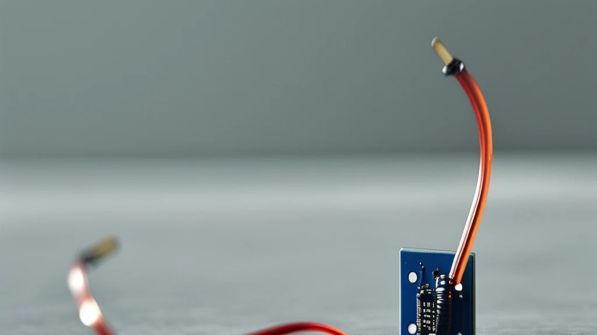
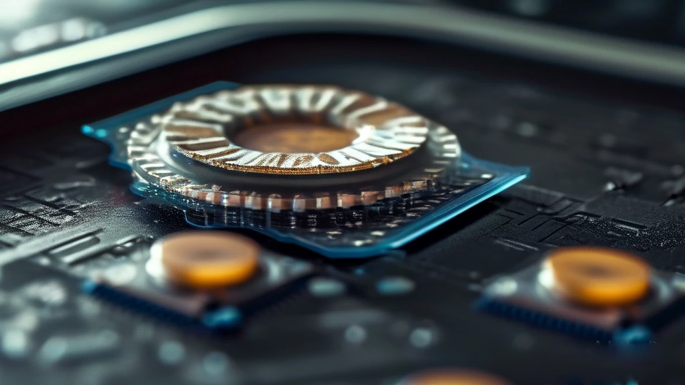
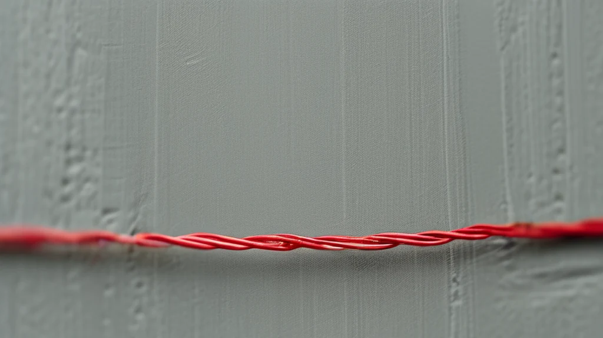
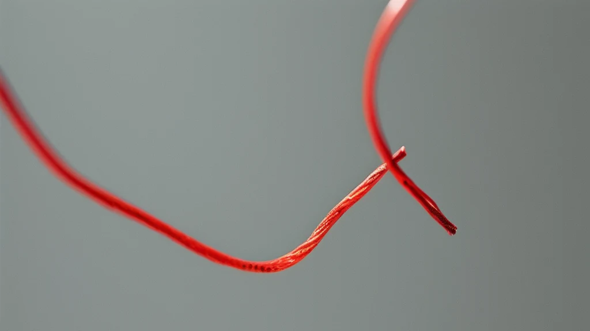
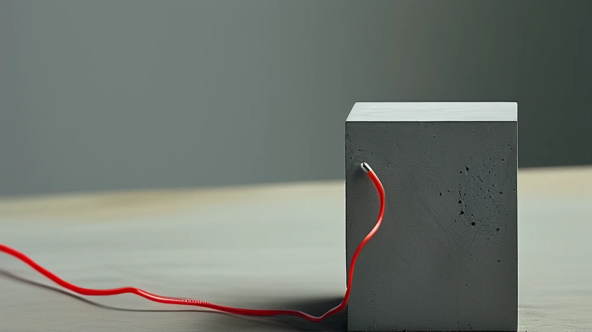
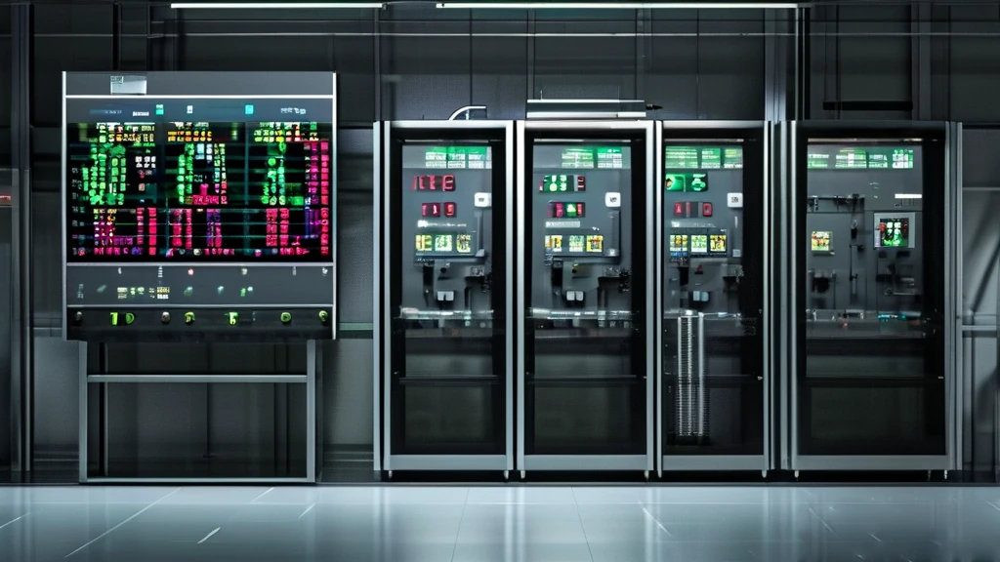

圖片由 AI輔助創作Image by AI
【鄭哥點評】欄目：鄭哥博客點評｜日期：2026-11-17
前排睇到條片講「AI 圈很火的 ESP32」，話呢塊幾十蚊嘅小板可以整智能助理、自動操控手機點外賣、自動回覆。我做外貿廿六年，睇完第一個反應唔係「好玩」，而係「呢門生意到底賣乜」。答案比我預期有意思。

圖片由 AI輔助創作Image by AI
一、先講事實：佢係乜，賣成點
ESP32 係上海樂鑫科技（688018.SH，科創板）出嘅 MCU（微控制器）：雙核、內置 Wi-Fi 同藍牙、開發板幾十蚊人仔。它唔係電腦，係一粒「識上網嘅開關」。
規模唔細：樂鑫官網 2023 年 9 月 22 日公告，物聯網芯片全球累計出貨量突破 10 億顆。2025 年年度報告摘要顯示，公司營業收入 25.65 億元、同比增長 27.82%；歸屬於上市公司股東的淨利潤 4.98 億元、同比增長 46.72%；研發投入佔營業收入 23.52%。
產品線亦早已唔止一塊板：C 系列走 RISC-V 高性價比（ESP32-C5／C6）、E 系列做到三頻 Wi-Fi 6E（2.4／5／6GHz，160MHz 頻寬、2x2 MU-MIMO）、H 系列主攻超低功耗同 Matter／Thread／Zigbee。樂鑫官方對 S3 嘅描述直接寫「功能強大的 AI SoC」，P4 就係雙核 RISC-V 拉到 400MHz、加埋 ISP 影像處理。
來源：樂鑫科技官網《領跑物聯網芯片市場｜樂鑫 IoT 芯片全球出貨量突破 10 億顆！》，2023-09-22｜https://www.espressif.com/zh-hans/news/1_Billion_Chip_Sales

圖片由 AI輔助創作Image by AI
二、AI 圈用佢，因為佢係「接口」而唔係「算力」
大模型喺雲上，物理世界喺枱面。中間缺一個又平、又慳電、又可以全年唔關機嘅橋。呢個位，就係 ESP32 嘅位。
典型玩法有三種。第一種係語音節點：板子採音，上傳雲端做語音識別，再交畀大模型，答覆用語音合成播返出嚟。第二種係工具端：讓 AI 可以「按一下真實嘅掣」——繼電器、馬達、門鎖、傳感器。第三種係上報：溫濕度、人體感應、門磁，定時餵數據畀 AI 做判斷。
關鍵一句：它唔跑模型。它只負責傳話同觸發。所有推理都喺雲上或者其他機器度發生。明白呢點，你才明白佢嘅成本結構——幾十蚊買嘅係「接得上」，唔係「算得動」。
來源：樂鑫科技《2025 年年度報告摘要》（巨潮資訊網），2026-03-21｜https://static.cninfo.com.cn/finalpage/2026-03-21/1225022430.PDF

圖片由 AI輔助創作Image by AI
三、「自動點外賣、自動回覆」係誇大
呢點我要講白：ESP32 本身控制唔到你部手機。佢冇屏幕、冇觸控、冇你嘅 App 權限。
視頻講嘅「自動點外賣、自動回覆」，實際架構係：手機端跑自動化（快捷指令、Tasker、無障礙腳本），ESP32 只係做觸發器——你按一下實體掣，佢發個請求，手機執行。
所以準確講法係：ESP32 負責「觸發同上報」，唔負責「決策同操控」。把佢講成「AI 幫你點外賣」，係把三段鏈路壓成一句標題——好聽，但會誤導想入門嘅人。
來源：樂鑫科技官網《ESP32-P4 芯片升級：性能與多媒體體驗全面提升》｜https://www.espressif.com/zh-hans/news/ESP32_P4_v3.x_Upgrade

圖片由 AI輔助創作Image by AI
四、錢到底喺邊：芯片薄利，方案厚利
睇樂鑫嘅數就明白：2025 年營收 25.65 億，研發投入佔營收 23.52%。芯片呢行，規模唔夠大都養唔起研發，所以真正厚利唔喺一粒芯片，喺「芯片 + 模組 + 軟件 + 認證 + 供貨」呢個組合。
呢個組合，正好係我哋做硬件外貿嘅位置。一塊開發板幾十蚊人仔，做成一個帶外殼、帶 App、帶雲端帳號嘅成品，賣幾十美金——差價唔係來自焊工，來自四件事：穩定供貨、認證（CE／FCC／RoHS）、軟件可以升級、售後有人接電話。
需求亦真係喺度。樂鑫年報引用 IDC 預測：全球邊緣計算支出 2025 年接近 2,610 億美元，年均複合增長 13.8%，2028 年接近 3,800 億美元。呢個數字的意義唔係「賽道好大」，而係「客戶已經有預算，唔需要你教育市場」。
來源：樂鑫科技《2025 年年度報告摘要》（巨潮資訊網），2026-03-21｜https://static.cninfo.com.cn/finalpage/2026-03-21/1225022430.PDF

圖片由 AI輔助創作Image by AI
五、鄭哥點評
第一，ESP32 火，唔係因為技術新。它 2016 年就出，比大部分大模型都老。它火係因為 AI 第一次需要「手腳」——大模型終於識講，但唔識按掣。
第二，幾十蚊嘅板賣唔出高價，但「接好接口嘅方案」可以。你賣嘅唔係硬件，係「雲上嘅腦，接到枱面嘅手」中間嗰一段。呢段而家冇標準答案，所以有錢賺。
第三，唔好被「自動點外賣」呢類標題騙。真正值錢嘅場景好悶：工廠設備狀態、倉庫溫濕度、報價牌自動更新、客戶詢盤提示燈。悶嘅嘢先有人肯持續付錢。
最後一句：AI 唔缺大腦，缺嘅係一隻可以碰到東西嘅手。而呢隻手，而家只要幾十蚊。
圖片由 AI輔助創作Image by AI
\[Zheng Ge's Take\] Column: Zheng Ge's blog commentary | Date: 2026-11-17
I watched a short video about ESP32 being all the rage in AI circles - a board costing a few dozen yuan that can apparently build you a voice assistant, control your phone to order takeaway and auto-reply to messages. After twenty-six years in foreign trade my first reaction was not 'how fun' but 'what exactly is this business selling'. The answer turned out more interesting than I expected.
圖片由 AI輔助創作Image by AI
1. First the facts: what it is, and how well it sells
The ESP32 is an MCU from Espressif (688018.SH, Shanghai STAR Market): dual-core, Wi-Fi and Bluetooth built in, dev boards costing a few dozen yuan. It is not a computer, it is a switch that knows how to get online.
The scale is not small. Espressif announced on 22 September 2023 that cumulative global shipments of its IoT chips had passed one billion. Its 2025 annual report summary shows revenue of 2.565 billion yuan, up 27.82 per cent, net profit attributable to shareholders of 498 million yuan, up 46.72 per cent, with R&D at 23.52 per cent of revenue.
The line-up is well past a single board: the C series runs RISC-V for cost (ESP32-C5, C6), the E series does tri-band Wi-Fi 6E at 2.4, 5 and 6 GHz with 160 MHz bandwidth and 2x2 MU-MIMO, and the H series targets ultra-low power with Matter, Thread and Zigbee. Espressif describes the S3 as a 'powerful AI SoC', and the P4 pushes dual-core RISC-V to 400 MHz with an image signal processor.
Source: 樂鑫科技官網《領跑物聯網芯片市場｜樂鑫 IoT 芯片全球出貨量突破 10 億顆！》，2023-09-22 | https://www.espressif.com/zh-hans/news/1_Billion_Chip_Sales
圖片由 AI輔助創作Image by AI
2. The AI crowd uses it because it is an interface, not compute
The model sits in the cloud; the physical world sits on the desk. What is missing in between is a bridge that is cheap, frugal with power and can stay on all year. That slot is where the ESP32 lives.
Three patterns dominate. First, a voice node: the board captures audio, uploads it for speech recognition, hands the text to a model, and speaks the answer back through synthesis. Second, a tool endpoint: letting an AI 'press a real button' - a relay, a motor, a lock, a sensor. Third, reporting: temperature, humidity, presence, door contacts, feeding data upward on a schedule.
One sentence matters: it runs no models. It relays and it triggers, while all inference happens in the cloud or on another machine. Understand that and you understand the cost structure - a few dozen yuan buys connectivity, not computation.
Source: 樂鑫科技《2025 年年度報告摘要》（巨潮資訊網），2026-03-21 | https://static.cninfo.com.cn/finalpage/2026-03-21/1225022430.PDF
圖片由 AI輔助創作Image by AI
3. 'Orders takeaway for you' is an exaggeration
Let me be blunt about this: an ESP32 cannot control your phone. It has no screen, no touch, no access to your app permissions.
What those videos actually describe is a chain: automation on the phone (Shortcuts, Tasker, accessibility scripts) with the ESP32 as the trigger - you press a physical button, it fires a request, the phone does the work.
So the accurate statement is that the ESP32 handles triggering and reporting, not deciding and operating. Calling it 'AI orders your takeaway' compresses a three-link chain into one headline - it sounds good and it misleads exactly the people trying to start.
Source: 樂鑫科技官網《ESP32-P4 芯片升級：性能與多媒體體驗全面提升》 | https://www.espressif.com/zh-hans/news/ESP32_P4_v3.x_Upgrade
圖片由 AI輔助創作Image by AI
4. Where the money actually is: thin on chips, thick on solutions
Espressif's own numbers tell you where the margin lives: 2.565 billion yuan of revenue in 2025 against R&D at 23.52 per cent of it. Chip design only works at scale, so the thick profit is never in a single die - it is in the bundle of chip, module, software, certification and supply.
That bundle is precisely where a hardware exporter sits. A dev board is a few dozen yuan; the same electronics inside a case with an app and a cloud account sells for a few dozen dollars. The spread does not come from soldering, it comes from four things: reliable supply, certification (CE, FCC, RoHS), upgradable software, and after-sales that answers the phone.
And the demand is real. Espressif's annual report quotes IDC forecasting global edge computing spending near 261 billion dollars in 2025, compounding at 13.8 per cent to almost 380 billion by 2028. The point of that number is not 'the market is big' - it is that customers already have budget, so nobody has to educate them.
Source: 樂鑫科技《2025 年年度報告摘要》（巨潮資訊網），2026-03-21 | https://static.cninfo.com.cn/finalpage/2026-03-21/1225022430.PDF
圖片由 AI輔助創作Image by AI
5. Zheng Ge's Take
First: the ESP32 is not hot because the technology is new. It shipped in 2016, older than most of the models people connect it to. It is hot because AI finally needs hands - the model learned to talk and still cannot press a button.
Second: a thirty-yuan board cannot command a high price, but a properly integrated solution can. What you sell is not hardware, it is the segment between a brain in the cloud and a hand on the desk. That segment has no standard answer yet, which is exactly why it pays.
Third: do not be fooled by 'order takeaway automatically'. The valuable uses are dull - machine status on a factory floor, warehouse temperature, a price board that updates itself, a light that tells you a customer enquiry arrived. Dull is what people pay for month after month.
One last line: AI is not short of a brain. It is short of a hand that can touch things - and that hand now costs a few dozen yuan.